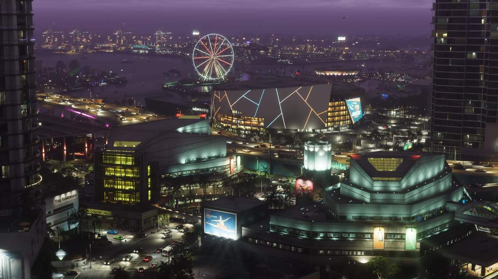
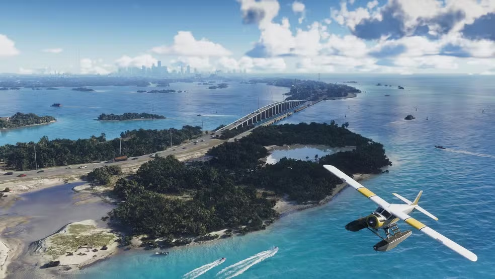
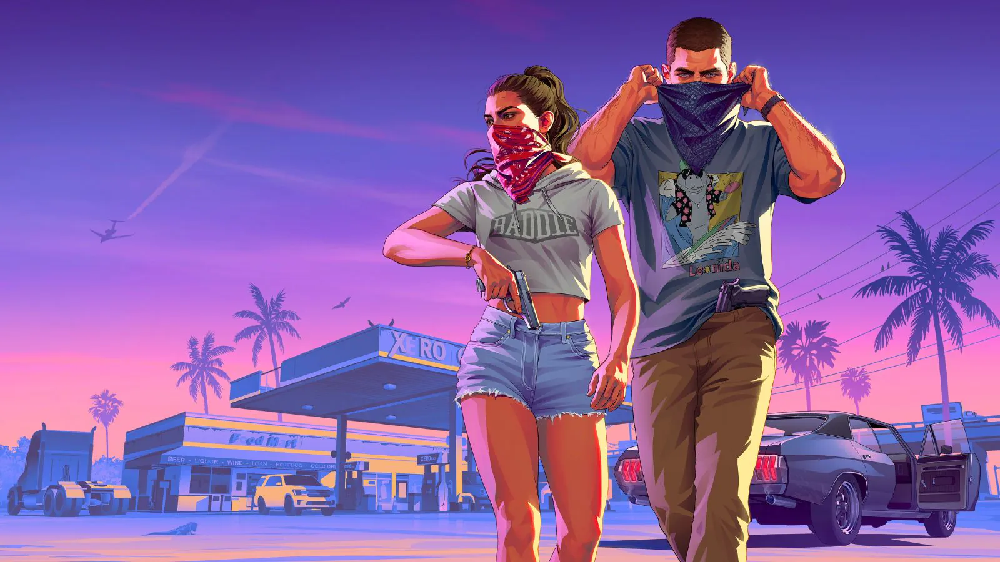

GTA V chega às lojas
Lançado em 17 de setembro, tornou-se a referência mais recente entre os GTA numerados.
UM PROJETO SOBRE GRAND THEFT AUTO VI
Treze anos depois de GTA V, a próxima grande viagem da série tem Jason e Lucia em Vice City. Explore o que já foi anunciado e veja três bibliotecas JavaScript em ação.
01 / O JOGO
GTA VI acompanha Jason e Lucia. Depois que um serviço aparentemente simples dá errado, os dois se veem no meio de uma conspiração criminosa pelo estado fictício de Leonida, que inclui Vice City. Para sobreviver, precisam confiar um no outro.
O lançamento está previsto para 19 de novembro de 2026 no PlayStation 5 e Xbox Series X|S. Esta página é um trabalho escolar independente.
Conhecer o jogo no site oficial ↗02 / POR QUE TANTA EXPECTATIVA?
Lançado em 17 de setembro, tornou-se a referência mais recente entre os GTA numerados.
A Rockstar revela o retorno a Vice City, agora no estado de Leonida.
O lançamento está marcado para 19 de novembro, após adiamentos anunciados pela empresa.
GTA V e Red Dead Redemption 2 deram à Rockstar uma reputação de mundos abertos ricos em detalhes e histórias ambiciosas. O sucesso comercial de GTA V e a longa vida de GTA Online ajudam a explicar o interesse pelo próximo jogo. Essa confiança é uma expectativa baseada no histórico, não uma garantia de que GTA VI corresponderá a todas as promessas.
Os adiamentos também pesam nessa avaliação: a Rockstar afirmou que precisava de mais tempo para chegar ao padrão de qualidade esperado. O público só poderá julgar o jogo completo depois do lançamento.
NOVIDADES · CONFERIDAS EM 5/10/2026
A Rockstar mantém a previsão de lançamento em 19 de novembro de 2026 para PS5 e Xbox Series X|S. O jogo ainda não saiu; informações sobre sua versão final podem mudar.
Segundo a reportagem com a Rockstar, Leonida terá mais de 170 espécies de animais terrestres, aéreos e aquáticos. O sistema climático inclui tempestades tropicais e furacões; a frequência e o impacto deles nas missões seguem sem confirmação.
Ler a edição da Game Informer ↗A Rockstar publicou uma apresentação mais longa, capturada dentro do jogo no PlayStation 5.
Ver anúncio da Rockstar ↗Esta página registra informações verificadas nesta data. Para anúncios posteriores, veja o Newswire da Rockstar ↗ e a edição 382 da Game Informer ↗.
03 / GALERIA INTERATIVA
Imagens de divulgação de GTA VI. Arraste, clique nas setas ou use o teclado para navegar.



Capturas e artes promocionais de GTA VI fornecidas para este projeto. Imagens © Rockstar Games / Take-Two Interactive. A página é independente.
04 / INTERAÇÃO
O botão chama uma função da biblioteca canvas-confetti. Clique para ver o efeito acontecer na própria página.
Experimente a terceira biblioteca.
05 / COMO FOI FEITO
Cria o carrossel de imagens. O JavaScript seleciona .gallery e configura setas, paginação e navegação pelo teclado.
Mostra animações quando as seções entram na tela. O HTML marca os elementos com data-aos="fade-up" e o JavaScript inicia AOS.init().
Gera partículas coloridas no clique. O botão chama a função confetti() com quantidade e cores escolhidas para a página.